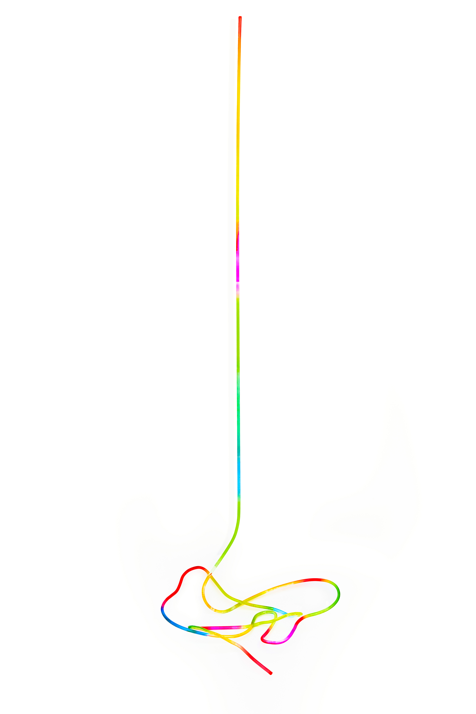
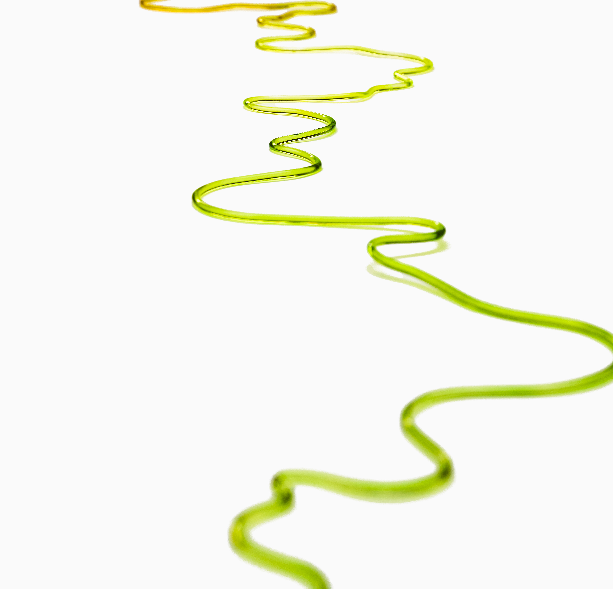
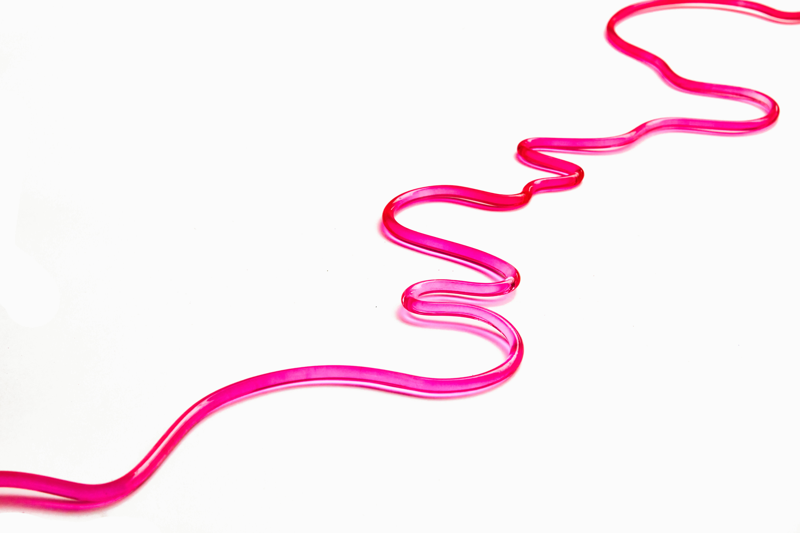
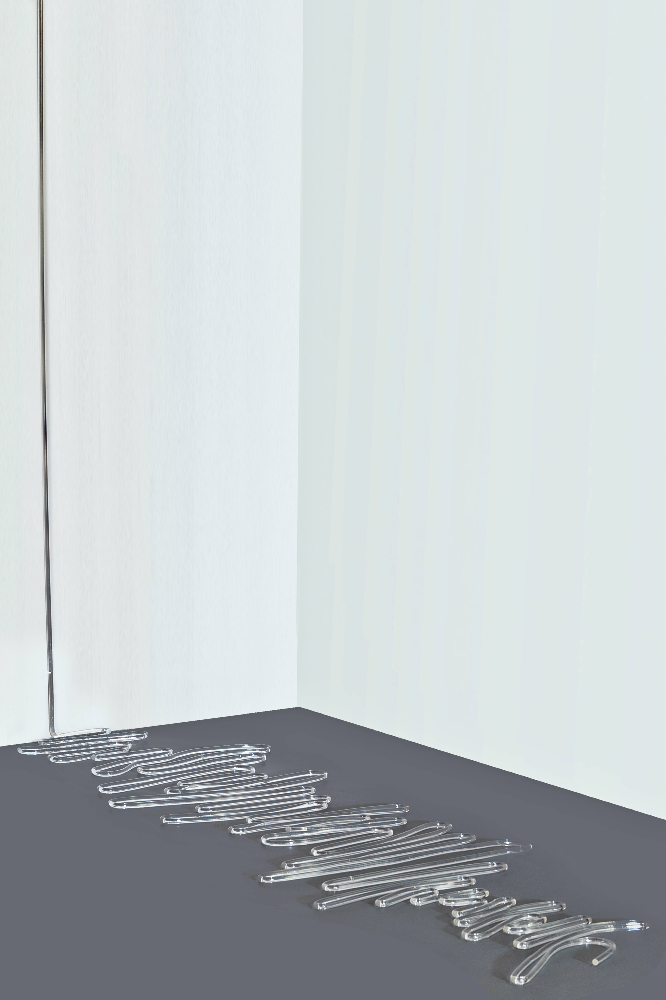
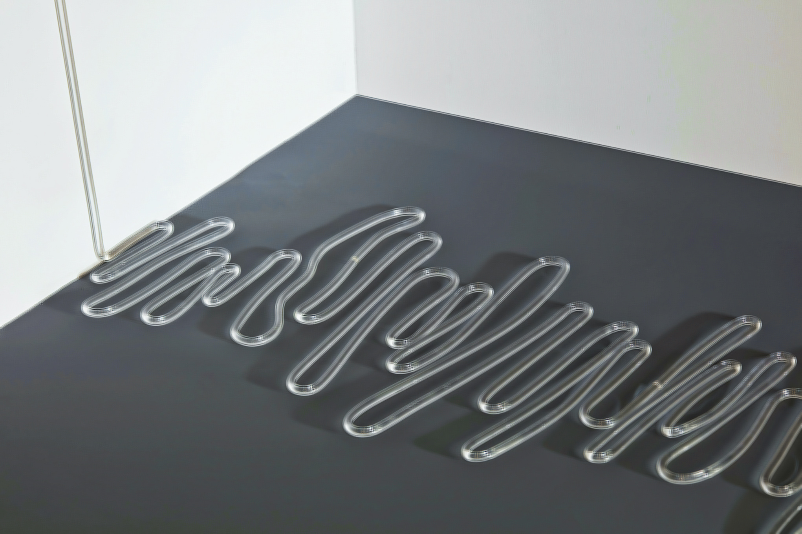
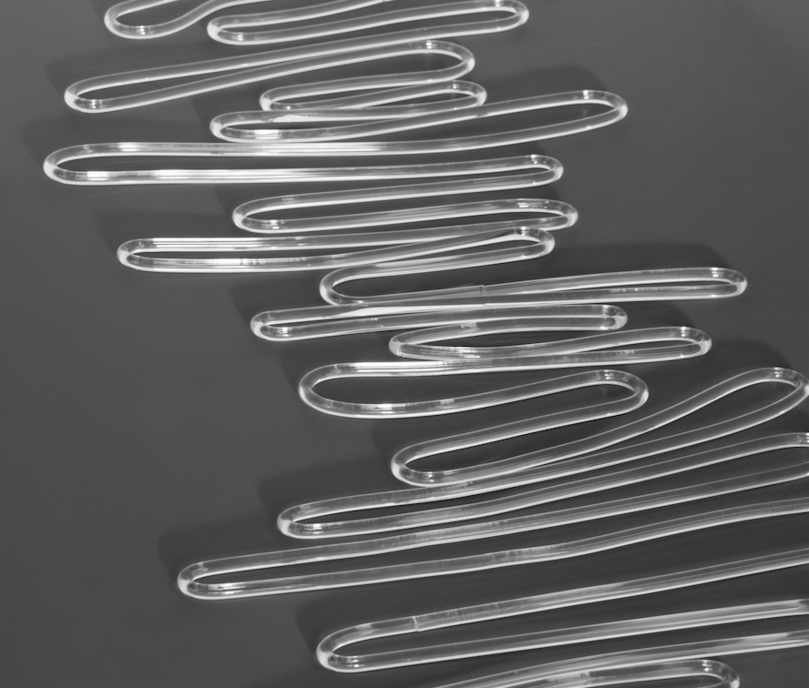
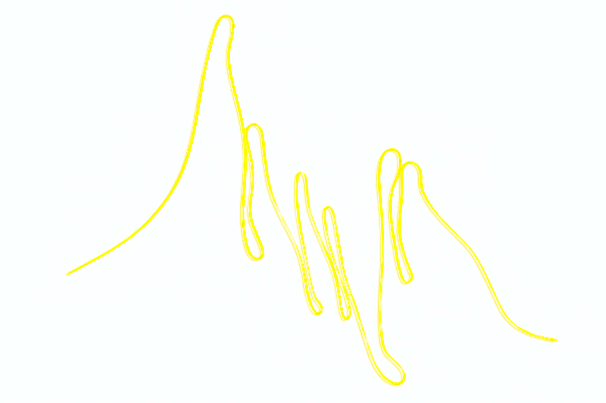

Line Series
Exploring the rhythmic intersection of form and color. Through acrylic and manual dyeing techniques, the "Line" series translates abstract emotions into physical dimensions.

Line 1
Acrylic, Handmade dyeing / 2024

Line 1

Line 3
Acrylic, Handmade dyeing / 2024

Line 4
Acrylic, Handmade dyeing / 2024

Line 5
Acrylic, Handmade dyeing / 2024

Line 6
Acrylic, Handmade dyeing / 2024

Line 7
Acrylic, Handmade dyeing / 2024

Line 8
Acrylic, Handmade dyeing / 2024

Line 9
Acrylic, Handmade dyeing / 160 x 120 cm / 2024